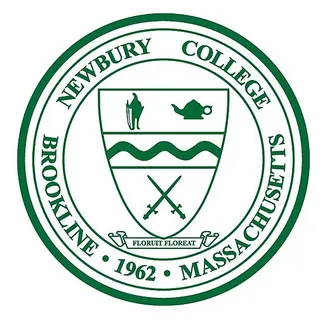

Garrett H. Sacken's Portfolio
College Education
Johnson & Wales University Providence(2019 - 2023)

Decided to attend Johnson & Wales after receiving the announcement that my original school Newbury College was being shut down due to financial troubles. Continued double majoring in both Computer Science and Cyber Security at JWU. Took on an internship in my Junior year at JWU where I was an IT intern. While attending JWU I primarily took part in the JWU Esports team and became a foundation for one of the competitive games. Soon after the director left and the previous 'athletic' had soon been turned into a club being run by students. As a result I became one of the student leaders for that club helping it grow and compete. I put many hours into making sure the dedicated game I was reponsible for ran with no issues. This required good communication between the other student leaders and the students participating. The game I was responsible for competed at the highest level and against some of the best teams in the league and came close to winning many tournaments/titles.
Newbury College(2018 - 2019)
Prior to graduating high school I had already decided and committed to going to Newbury College where I was going to pursue higher education and try to obtain a Bachelor's of Science in Computer Science and Cyber Security. I was also going to partake in the collegiate mens soccer team which competed on a D3 level. My success at Newbury continued both inside the classroom and on the soccer field. The mens team had ended up winning the NCAA D3 conference that we were a part of. Overall what determined my success at both colleges was that fact that I am a very competitive, dedicated, hard-working individual who will accomplish the goals I set.